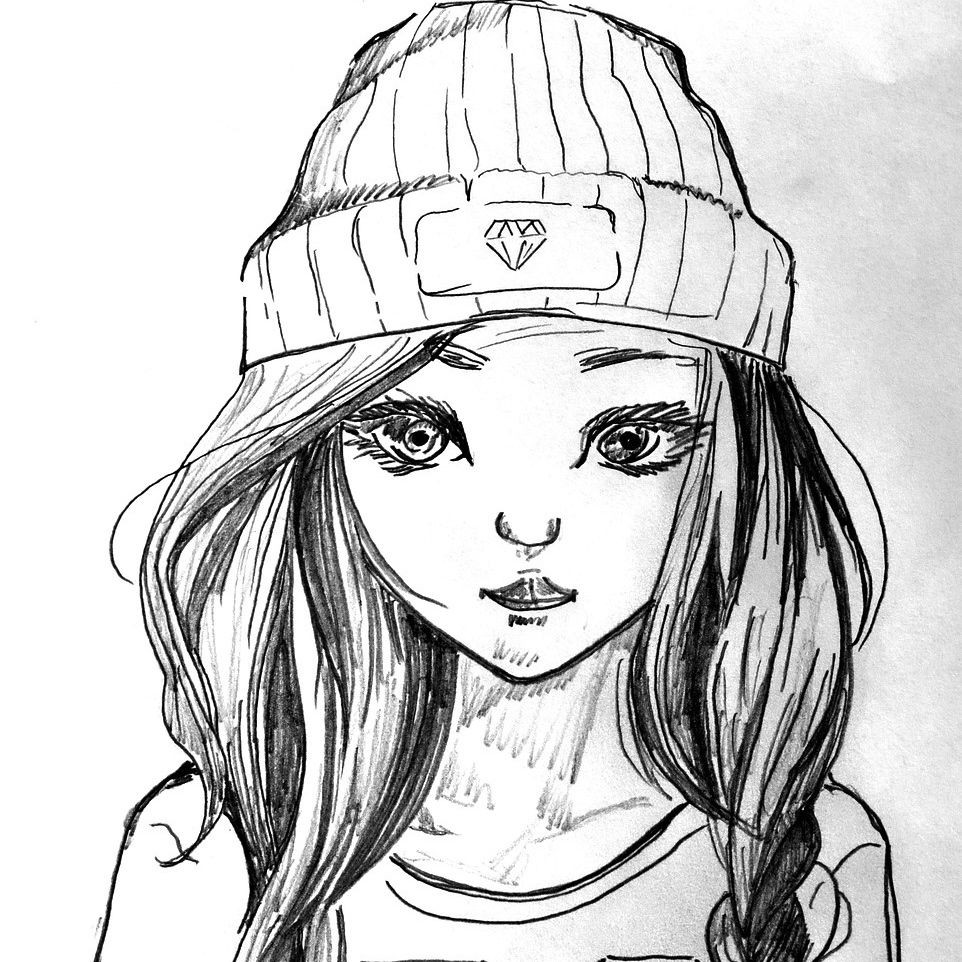

О себе
Меня
зовут Даша Плошкина. Я родилась 21 ноября 2005 года в городе
Всеволожске. В 2012 году я пошла в первый класс школы № 59, где и учусь
в настоящее время в 5 "б" классе. Мои любимые предметы - математика и
история.
Кроме школы я
увлекаюсь шахматами и плаванием. Люблю читать фантастические рассказы,
гулять с друзьями, смотреть телевизор и играть в компьютерные игры. У
меня есть домашные питомцы: собака Ральф, которой 4 года; кошка
Анфиска, ей 5 лет, и пока еще крошечная черепаха Тортилла. Можно
сказать, что у меня дома целый зоопарк.